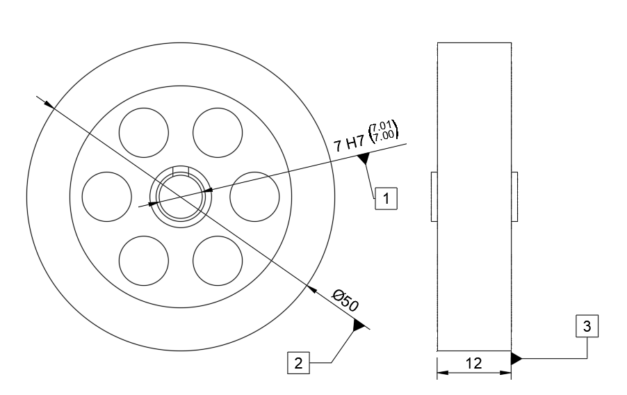

Målerapport (FAI)
First Article Inspection // Dimensionel Verifikation
ID: FAI-03-FLYWHEEL
Dato: 18.03.2026
Projekt / Emne
Flywheel (Svinghjul)
Operatør
G. Cilinder-Hansen
Materiale
Messing (MS58)
Maskine
Haas Mini Mill (CNC)
Ref. Temperatur
20.0 °C (± 0.5 °C)
Status
GODKENDT
// CTQ Reference (Ballooned Drawing)

Tegning: FAI-03-FLYWHEEL-REV01 // CTQ Isolation
// Dimensionel Verifikation
| Ref # | Karakteristik | Nominal | Tolerance | Målt [mm] | Afvigelse | Status |
|---|---|---|---|---|---|---|
| 01 |
Centerboring (Aksel) Indv. mikrometer / Måledorn |
Ø 7.000 |
+0.015 0.000 (H7) |
7.000 | 0.000 | OK |
| 02 |
Ydre Diameter (Masse) Udv. mikrometer 25-50mm |
Ø 50.000 | ± 0.100 | 50.010 | +0.010 | OK |
| 03 |
Total Emnetykkelse Udv. mikrometer 0-25mm |
12.000 | ± 0.100 | 12.005 | +0.005 | PASS |
Operatør Bemærkninger:
Svinghjulet er CNC-bearbejdet (Haas Mini Mill) for at sikre præcis cirkulær interpolation og jævn massefordeling. H7-centerboringen er udført præcist til nominelt mål (7.000 mm) for at garantere en stabil prespasning på krumtapakslen uden risiko for mikrobevægelser eller kast under drift.